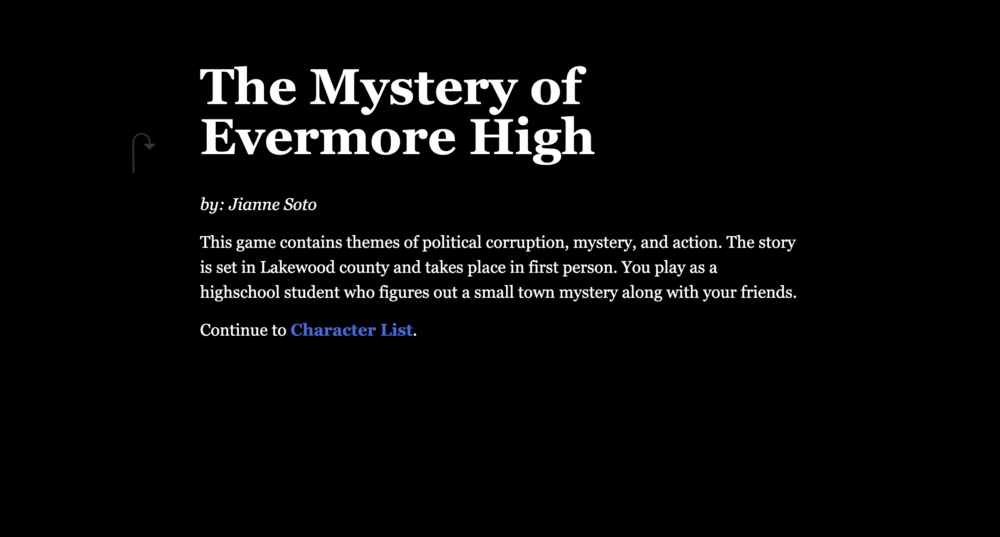

The Mystery of Evermore High
The Mystery of Evermore High is an interactive narrative game where players uncover hidden secrets and systemic corruption beneath the surface of a seemingly ordinary high school. Built in Twine, it uses branching dialogue, tension-building pacing, and player-driven consequences to immerse the user in an unfolding psychological mystery.

Characters

Determined student uncovering the school’s hidden truths.

Loyal best friend with secrets of her own.

Outspoken rebel challenging school authority.

Mysterious faculty member who knows more than he reveals.

Quiet observer tied deeply to the unfolding events.
Narrative Structure

Roles: Writer · Narrative Designer · Visual Artist
▶︎ Play Game
← Back to Projects